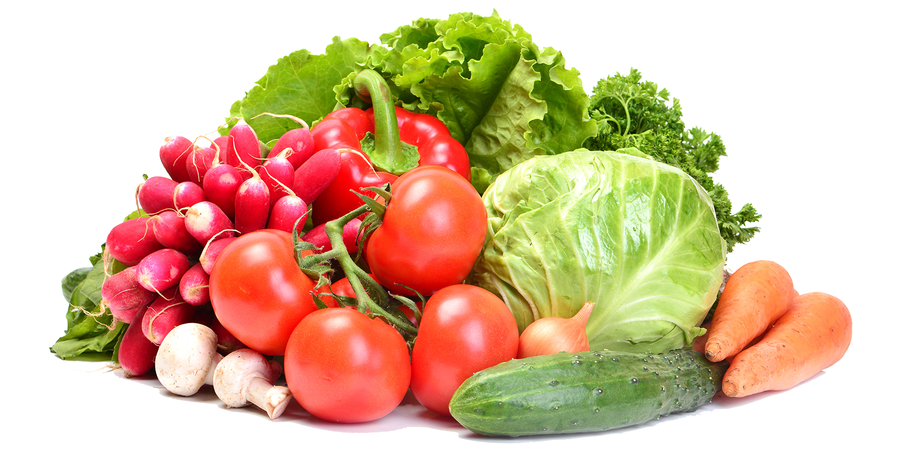

GIVING THE WORLD ONE LESS THING TO WORRY ABOUT
As food drought permeates, the gap between those at the top, and those at the bottom widens
We are laser-focused on ensuring that the hundreds of neighborhoods stuck in a food drought in the state of Florida get easy access to fresh, nutritient-rich food
Donate to fund a food bank in your local area today!
By clicking "Get started" I agree to Nutrition.ly's Terms of service